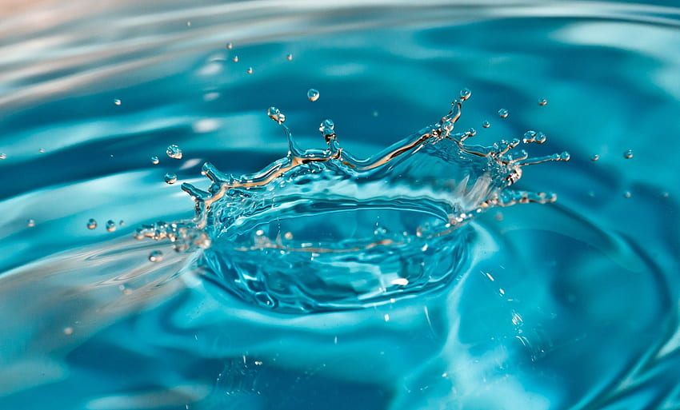

28
Feb
Feb
By admin | Mohammed Shuja
"Elevate your hydration, purified"
encapsulates the transformative power of purified water in enhancing your daily hydration experience.
Water purifier incorporates cutting-edge purification technology that goes beyond basic filtration. It utilizes a combination of multiple filtration stages, such as activated carbon, sediment filters, reverse osmosis, UV disinfection, or other specialized methods, to ensure the highest level of water purity. This advanced technology effectively removes a wide range of contaminants, including bacteria, viruses, chemicals, heavy metals, and sediments, providing you with water that is truly clean and safe to consume
Read our blog and know more about our latest update..
encapsulates the transformative power of purified water in enhancing your daily hydration experience.
Pure refreshment is not just a necessity; it's a luxurious indulgence.
Water, in its purest state, is characterized by its crystal-clear clarity and transparency.
Can be Analyse anytime and anywhere
Offer decision support tools that utilize data analytics and modeling techniques. These tools can assist in identifying trends, predicting water quality changes, and optimizing water management strategies.
System can be configured to generate alerts or notifications based on predefined thresholds or abnormal changes in water quality parameters. These alerts can be sent via email, SMS, or through the online platform
Online water quality analysis provides real-time or near real-time data on water quality parameters. This data can be accessed and viewed instantly through online platforms or software interfaces, enabling timely decision-making in water quality.
Online water quality analysis provides the advantage of early warning systems. By continuously monitoring water quality parameters, deviations from established thresholds or abnormal changes can be detected promptly.
"Passionate Individuals, Collective Impact"

Web-Developer

Software Developer
We are always here for you...
admin@domain.com
Hyderabad , India
+91 1234567890